1遊戲簡介與教學目標Overview & Learning Goals
一場大雪後，纜車的一根鋼製吊桿伸長了 4%，而且回不去了。現場留下「幻影應變」的卡片。玩家扮演六位金屬英雄，沿著應力–應變曲線的六條線索調查真相。打倒敵人、打破題目箱並答對題目，就能收集寶石、破解案件。
After a blizzard, a cable-car steel hanger rod has stretched 4 % and won't spring back. A card from "Phantom Strain" was left at the scene. You play six metal heroes who follow six clues along the stress–strain curve. Defeat enemies, break question boxes and answer correctly to collect gems and crack each case.
| 本章學習目標Chapter goal | 遊戲中的對應In the game |
|---|---|
| 工程應力與應變 σ = F/A₀、ε = Δl/l₀Engineering stress & strain | CASE 01 計算題；受力時角色伸長CASE 01 calculations; heroes stretch when loaded |
| 彈性與塑性變形Elastic vs plastic deformation | 血條在彈性區可完全恢復，超過降伏點就留下永久應變Health fully recovers in the elastic region; past yield, strain is permanent |
| E、ν、G、KE, ν, G, K | E 越大擊退越小；被拉時身體變長變細（蒲松效應）Higher E = less knockback; stretched heroes get longer and thinner (Poisson effect) |
| σy、TS、頸縮、延性、韌性σy, TS, necking, ductility, toughness | 曲線上的三個區域；超過 TS 頸縮變慢；曲線下面積＝耐打程度Three regions on the curve; past TS you neck and slow down; area under the curve = toughness |
| 真應力與應變硬化True stress & strain hardening | 銅英雄越受傷攻擊越強（n ≈ 0.5）Copper hits harder as plastic strain grows (n ≈ 0.5) |
| 硬度試驗Hardness tests | 鎢英雄的「維克氏壓痕」大招；CASE 06 題目Tungsten's "Vickers Indent" super; CASE 06 questions |
2開始遊戲與流程Getting Started
- 開啟遊戲後直接進入主選單（不另設標題頁）。手機或平板請先按右下角的「全螢幕」。
- 按「開始遊戲（劇情）」：播放約 45 秒的水彩風開場動畫（可按「跳過」）。
- 閱讀序章，選擇案件（需依序破解），再為每位玩家選英雄。
- 每個案件開始前會有劇情提示，接著進入戰鬥。
- 在時間內收集足夠寶石即可破案；CASE 06 需擊倒魔王「巨型橫梁機」。
- 全破後會播放約 1 分鐘的結局影片（真相揭曉、慶功宴、NG 花絮、片尾名單與下回預告）；之後可在案件選單按「🎬 觀看結局」重看。
- 結算畫面會列出答對率與需要複習的題目。
- The game opens straight to the main menu (no separate title page). On phones and tablets, tap "Fullscreen" first.
- Press "Start Game (Story)": a ~45-second watercolor intro plays (you can skip it).
- Read the prologue, pick a case (solve them in order), then choose a hero for each player.
- A short story scene introduces each case, then the battle begins.
- Collect enough gems before time runs out; in CASE 06 you must defeat the boss, The Great Crosshead.
- Clearing all six cases unlocks a ~1-minute ending movie (the big reveal, a victory party, bloopers, credits and a next-chapter teaser); replay it any time with "🎬 Watch Ending" on the case map.
- The results screen shows your accuracy and the questions to review.
3操作方式Controls
| 移動Move | 攻擊Attack | 大招Super | 瞄準Aim | |
|---|---|---|---|---|
| P1 鍵盤＋滑鼠keyboard + mouse | WASD | J / 滑鼠左鍵left click | K / 滑鼠右鍵right click | 滑鼠，或自動瞄準mouse, or auto-aim |
| P2 鍵盤keyboard | ↑←↓→ | / | . | 自動瞄準auto-aim |
| P3–P4 遊戲手把gamepad | 左搖桿 / 十字鍵left stick / d-pad | A / RT | B / LT | 右搖桿right stick |
| 觸控Touch | 左下虛擬搖桿left virtual stick | ✊ 按住；拖曳可瞄準hold ✊; drag to aim | ★ 放開施放；拖曳可瞄準release ★; drag to aim | 自動或拖曳auto or drag |
暫停：P 或 Esc、手把 Start、右上角 Ⅱ 鍵。答題時可按 1–4。按鍵可在「設定 → 自訂按鍵」修改。若只有 1–2 位玩家，P1、P2 也可以使用第 1、2 支手把。
Pause: P or Esc, gamepad Start, or the Ⅱ button. In a quiz press 1–4. Change keys in Settings → Key Bindings. With 1–2 players, P1 and P2 can also use gamepads 1 and 2.
4血條＝應力–應變曲線Health = Stress–Strain Curve
- 綠色彈性區：受傷後休息約 2 秒，變形會完全恢復（彈性 = 可逆）。
- 黃色塑性區：超過降伏強度 σy，原子面滑移，紫色的塑性應變 εp 永久留下。卸載線（虛線）平行於彈性段，斜率為 E。
- 紅色頸縮區：超過抗拉強度 TS，開始頸縮，移動變慢。
- ✖ 斷裂：倒下並掉落 1 顆寶石，4 秒後換一根全新試體重新上場。
- 答對題目＝退火，消除部分塑性應變；紅色藥水也有同樣效果。
- Green elastic region: rest about 2 s and the deformation fully recovers (elastic = reversible).
- Yellow plastic region: past σy, atomic planes slip and the purple plastic strain εp stays. The unloading line (dashed) is parallel to the elastic slope E.
- Red necking region: past TS you neck and move slower.
- ✖ Fracture: you go down, drop 1 gem, and respawn 4 s later as a fresh specimen.
- A correct answer = annealing: it removes part of your plastic strain. Red potions do the same.
5六位金屬英雄The Six Metal Heroes
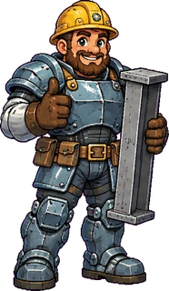
鋼鐵史提爾Sterling SteelE 207 GPa · σy 250 · TS 420 · %EL 25均衡型；大招「0.2% 偏移線」鋼樑牆定身敵人All-rounder; super "0.2 % Offset Line" freezes enemies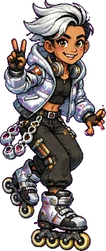
疾風艾爾Zip AlE 69 GPa · σy 35 · TS 90 · %EL 40速度型；E 低，被打飛很遠；大招「順風衝刺」Speedster; low E means big knockback; super "Tailwind Dash"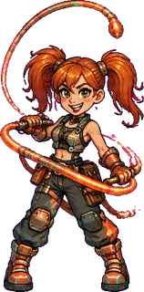
銅銅潘妮Penny CopperE 110 GPa · σy 69 · TS 200 · n ≈ 0.5應變硬化：塑性應變越大，鞭擊越強Strain hardening: more plastic strain, stronger whip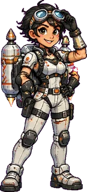
鈦空蒂雅Tia TitaniumE 107 GPa · σy 450 · TS 520比強度最高；大招「噴射突擊」Best strength-to-weight; super "Jet Strike"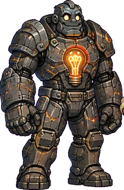
鎢鋼巨人湯克Tunk TungstenE 407 GPa · σy 1500 · %EL ≈ 2超硬但脆：一過降伏很快斷裂；大招「維克氏壓痕」Very stiff but brittle; super "Vickers Indent"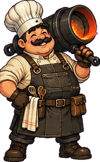
鑄鐵大廚Chef SkilletE ≈ 100 GPa · σy 200 · brittle抗壓強（壓縮傷害減半）、怕拉伸（拉力傷害加倍）Strong in compression (½ dmg), weak in tension (2× dmg)大招充能：造成傷害可慢慢充能，答對題目一次充 50%。
Super charge: dealing damage charges it slowly; each correct answer adds 50 %.
6敵人：負載類型Enemies: Loading Modes
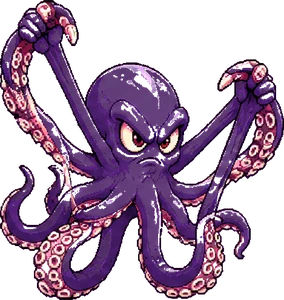
拉力章魚Tension Tentacle抓住英雄往回拉（拉伸）。打它 18 點傷害可掙脫。Grabs and pulls you (tension). Deal 18 damage to break free.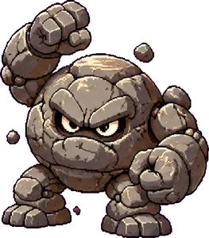
壓縮岩怪Compression Boulder跳起重壓地面（壓縮），看陰影閃避。Jumps and slams (compression). Watch the shadow.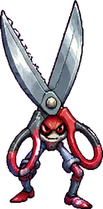
剪刀怪Shear Blade蓄力後直線衝刺（剪力 τ = F/A₀）。Winds up, then dashes (shear τ = F/A₀).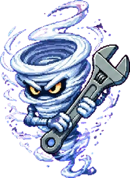
扭力旋風Torsion Twister環繞並發射旋風（扭轉），被打中方向會亂轉。Circles and shoots whirls (torsion); hits scramble your direction.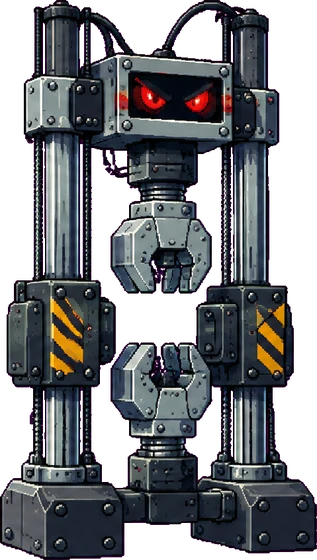
巨型橫梁機The Great CrossheadCASE 06 魔王：把全員往上拉、發出壓縮震波、召喚手下。答對題目可造成 8% 爆擊。CASE 06 boss: pulls everyone, sends compression quakes, summons minions. Correct answers deal 8 % critical damage.7題目箱與答題Question Boxes
金色「?」題目箱約每 7–10 秒出現（最多 2 個），打 3 下即可開啟。題目依案件出題（共 60 題，涵蓋 §6.2–6.10 與課本例題 6.1–6.5），每題 30 秒。
Golden "?" boxes appear every 7–10 s (max 2); hit one 3 times to open it. Questions follow the case (60 in total, covering §6.2–6.10 and Examples 6.1–6.5). You have 30 s per question.
| 答對Correct | 答錯 / 超時Wrong / time-out | |
|---|---|---|
| 效果Effect | +2 寶石（魔王戰改為 8% 爆擊）、大招 +50%、退火消除塑性應變、+100 分+2 gems (8 % boss crit in CASE 06), +50 % super, annealing, +100 points | 顯示正確答案與解析；這題稍後會再出現Shows the answer and explanation; the question returns later |
單機多人時，答題期間遊戲會暫停；連線時只有答題的玩家會暫時離場（無敵狀態）。
In local multiplayer the game pauses during a quiz; online, only the answering player steps out (invulnerable).
8遊戲模式Game Modes
| 模式Mode | 說明Description |
|---|---|
| 劇情模式Story | CASE 01–06 依序解鎖；1–4 人同機合作。CASE 01–06 unlock in order; 1–4 players co-op on one device. |
| 自由對戰Free Battle | 自選場地（雪地纜車站／月夜試驗室）、題目範圍（全部或單一案件）與人數。Choose the arena (Snowy Cable-Car Station / Moonlit Test Lab), question range (all or one case) and players. |
| 連線遊戲Online | 最多 4 台裝置透過中繼伺服器合作，見第 11 節。Up to 4 devices co-op via a relay server; see section 11. |
9設定選項Settings
| 項目Option | 選項（預設）Choices (default) |
|---|---|
| 語言Language | 中文／中文/English／English中文 / 中文/English / English |
| 難度Difficulty | 簡單／中／困難／地獄。難度越高，敵人血量、傷害、速度與數量越高，目標寶石越多，答題時間越短（30／25／20／15 秒）。中以上答錯會扣寶石（魔王戰改為魔王回血），困難與地獄答錯還會被拉長應變。也可在搜查路線圖與自由對戰畫面切換。Easy / Normal / Hard / Hell. Higher levels give enemies more HP, damage, speed and numbers, raise the gem goal and shorten the answer time (30 / 25 / 20 / 15 s). From Normal up, a wrong answer costs gems (the boss heals in CASE 06); on Hard and Hell it also adds strain. You can also switch it on the case map and in Free Battle. |
| 背景音樂Background music | 開啟／關閉。開啟後依場景切換：日常與溫馨（選單、出陣準備）、學術與典雅（搜查路線圖、劇情、開場）、奇幻與戰鬥（戰鬥、魔王、破案）。原創曲共 10 首，每首 8 個樂器音軌＋1 個獨立鼓組音軌，立體聲。「曲目」分頁列出全部歌曲，可試聽，也可固定播放某一首。On / Off. Changes with the scene: everyday & warm (menus, squad setup), academic & elegant (case map, story, intro), fantasy & battle (fights, boss, victory). 10 original tracks, each with 8 instrument tracks + 1 drum track, in stereo. The "Tracks" tab lists every song so you can preview it or always play one. |
| 音效Sound effects | 開啟／關閉On / Off |
| 音量Volume | 主音量、音樂、音效三個滑桿Master, music and SFX sliders |
| 全螢幕Fullscreen | 開啟／關閉（主選單右下角與右上角也有按鈕）On / Off (also buttons on the menu and top-right) |
| 繪圖Renderer | WebGPU 硬體／軟體。不支援 WebGPU 的裝置會自動改用軟體。WebGPU hardware / Software. Falls back to software automatically if WebGPU is unavailable. |
| 畫質Quality | 流暢（1280×720）／標準（1920×1080）／高（2560×1440，2K）Smooth (1280×720) / Standard (1920×1080) / High (2560×1440, 2K) |
| 重新開始、暫停Restart, Pause | 在暫停選單或設定「一般」分頁In the pause menu or Settings → General |
| 螢幕搖桿On-screen joystick | 開啟／關閉。觸控裝置第一次點擊時會詢問是否開啟。On / Off. Touch devices are asked on first tap. |
| 自訂按鍵Key bindings | P1、P2 的上下左右、攻擊、大招Up/down/left/right, attack, super for P1 and P2 |
| 劇情提示Story hints | 開啟／關閉（關閉後略過劇情對話與教學提示）On / Off (Off skips story scenes and tips) |
| 遊戲人數Players | 1–4（出陣準備中可把座位設為 本機／電腦／線上）1–4 (in Squad Setup each seat can be Local / CPU / Online) |
| 連線Network | 中繼伺服器網址（預設為 AEML Cloudflare 中繼）Relay server URL (defaults to the AEML Cloudflare relay) |
10存檔與讀檔Save & Load
進度（已破解案件、英雄選擇、每題答對紀錄）會自動保存在瀏覽器。另有 3 個存檔欄位，適合多人共用一台電腦。「匯出存檔碼」可把進度複製到另一台裝置，再用「匯入存檔碼」讀回。
Progress (solved cases, hero choices, per-question records) is saved automatically in the browser. There are also 3 save slots for shared computers. "Export Code" copies your progress so you can "Import Code" on another device.
11線上多人（1–4 人）Online Play (1–4)
連線使用 AEML 的 Cloudflare 中繼伺服器（與 Wii 模擬器、晶界斬鬼錄相同），不需另外架設。
Online play uses the AEML Cloudflare relay (the same one as the Wii emulator and the Ch.04 game); nothing else needs to be set up.
- 房主：主選單 →「線上多人」→ 出陣準備自動開房，畫面出現 6 碼房號、連結與 QR code。
- 把座位設為「線上」（點座位右上角的標籤可切換 本機／電腦／線上）。
- 其他玩家：開啟同一篇文章，掃 QR code 或點連結（網址帶
#ssbroom=房號會自動加入）；也可以按「加入 (Relay)」輸入房號，再選自己的英雄。 - 人齊後房主按「出發！」。沒人加入的線上座位由電腦代打。
- 線上玩家斷線時由電腦暫代；重新整理同一分頁即可回到原座位。
- Host: Main menu → "Online" → the squad setup opens a room and shows a 6-character code, a link and a QR code.
- Set seats to "Online" (tap the tag on a seat to switch Local / CPU / Online).
- Other players: open the same post and scan the QR code or open the link (a URL with
#ssbroom=CODEjoins automatically), or press "Join (Relay)" and type the code, then pick a hero. - When everyone is in, the host presses "Let's Go!". Empty online seats are played by the CPU.
- If an online player drops, the CPU takes over; reloading the same tab returns them to their seat.
本機也可以加入「電腦」隊友：在出陣準備把座位切換成「電腦」。電腦隊友打開的題目箱，會交給最近的玩家作答。
You can add CPU team-mates locally too: switch a seat to "CPU". Boxes opened by a CPU are answered by the nearest human player.
12手機與平板Phones & Tablets
遊戲嵌在文章中，請先按「全螢幕」並橫向持握。支援全螢幕的瀏覽器會進入真正的全螢幕；iPhone Safari 不支援元素全螢幕，會改用「填滿視窗」模式蓋住整個可見畫面。全螢幕時畫面固定為 16:9，不會捲動、放大或縮小。螢幕搖桿浮在左右兩側的黑邊上，不擋住遊戲畫面：左下移動，✊ 攻擊，★ 大招，Ⅱ 暫停。若畫面卡頓，請把畫質設為「流暢」或繪圖改為「軟體」。
The game sits inside the post: tap "Fullscreen" and hold the device in landscape. Browsers with element full screen use it; iPhone Safari, which does not support it, switches to a "fill the window" mode that covers the visible screen. In full screen the 16:9 picture is fixed and cannot scroll or zoom. The on-screen controller floats over the black side bars so it does not cover the battle: bottom-left to move, ✊ attack, ★ super, Ⅱ pause. If it stutters, set Quality to "Smooth" or Renderer to "Software".
13常見問題FAQ
為什麼沒有音樂？
Why is there no music?
背景音樂預設為關閉，請到「設定 → 音訊」開啟。
Music is off by default; turn it on in Settings → Audio.
畫面出現「此版本已被修改」？
"This copy has been modified"?
遊戲偵測到程式碼被改動。請使用 AEML, NTUST 發布的原始版本。
The game detected changed code. Please use the original release from AEML, NTUST.